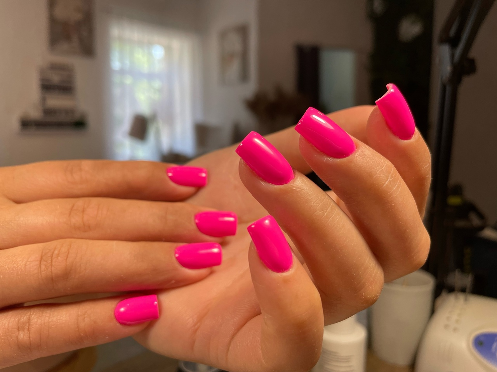
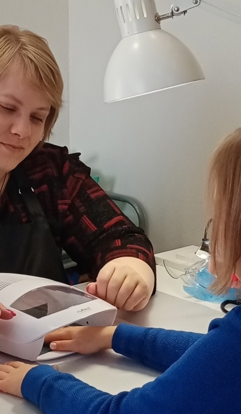

Работала в салоне с минимальным доходом, без понимания, как привлекать клиентов. После прохождения курса "Огонь-посты" и "ВК Бабло", начала активно продвигать свои услуги в ВК. Доходы выросли до 80-100 тысяч рублей в месяц. За последний год заработала больше миллиона рублей, смогла повысить квалификацию, обновить оборудование и начать откладывать.
Татьяна Куликова, мастер по маникюру из Приозерска, поделилась с нами своей историей.
Мы взяли у нее короткое интервью:
— Тань, помнишь, что было до курса, какой средний доход был в месяц? Сколько клиентов?
— До курса я не вела никакие соц сети вообще. Работала в найме за небольшую зарплату. Потом пошла работать в салон, попутно с основной работой. Но как то все было очень печально. Начинающий мастер маникюра – это грустная история. Клиентов мне искал салон. Но я поняла что, это не должно быть пределом. Я искала пути и нашла Евгению Брун)
Процесс был запущен. Я смогла найти выход и пришла учиться. Прошла Огонь-посты , и курс ВК бабло. Правда, до сих пор не прошла последние уроки. Но я обязательно доведу все до конца.
С салона я ушла. У нас, у мастеров, у многих проблемы со спиной. Думала не вернусь или сделаю перерыв.
Не тут-то было)
Клиенты сами меня нашли. И, причем, не только старые. Вдруг все, что я делала, пусть даже не совсем так, как нужно, в соцсетях стало работать. Я нашла место в коворкинге. Оформила самозанятость и работаю в своем собственном ритме.

— Какие сложности были во время обучения на нашем курсе? Насколько сложно было учиться? За сколько прошла обучение?
— Вы, дорогие, умеете все донести так, что только бери и делай. Сложного нет ничего. Если мозг есть и хоть один палец тыкать кнопочки)
Все обучение реально пройти за 2 месяца если не чесать так долго репу как я.
Все упирается в желание, в умение отбросить лень. Ну и возможности чуть. Без ноутбука, конечно, последние уроки не сделать как нужно.
— А как думаешь? с куратором было бы по-другому? Было бы легче? Мотивации больше?
— Думаю да. Возможно) Трудно сказать.
— Какие сейчас действия делаешь для привлечения клиентов? Как часто пишешь посты? Запускаешь ли рекламу?
— Посты пишу. Но не часто. С этим у меня наплывами. Рекламу делаю через ВК. Выкладываю объявления на доски объявлений. Мне конечно много еще что нужно сделать в том же ВК. И запретограмм я хочу попробовать сделать. И еще хочу сайт свой сделать . Моя проблема – это фото и видео. Вернее, их отсутсвие) Видела ваш курс на эту тему. И, думаю ,что приду и на него. Но это позже.
У меня столько идей сейчас, благодаря вам.
— А что за идеи?
— Ну к примеру, хочу использовать возможность и получить помощь от центра развития бизнеса.
Научиться не бояться себя рекламировать. Хоть вроде и сделала шаги. Но страх есть все равно. Есть планы и по повышению своих навыков в маникюре и педикюре.

Да много всего. Проблема с распределением времени. Борьба с собой за дисциплину.
Я не могу похвастаться огромными доходами. Все в пределах 80-100 тысяч в месяц. Но, когда я к вам обратилась, эта была сумма намного меньше, около 20 тысяч за работу в найме. А мастером, вообще, было первые месяцы по 2-3 тысячи. Так что для меня, ничего не умеющей в ВК, и вообще в социальных сетях и продвижении себя, это ооочень большой результат. И, я уверена сейчас, это не предел!
— А можешь поделиться, как изменилась жизнь, когда увеличился доход? Может что-то купила себе? Съездила в путешествие? Что-то смогла сделать, чего раньше не могла позволить себе)
— С увеличением дохода я смогла пройти повышение квалификации мастера маникюра. Постепенно закупила все, что нужно для работы. Приобрела телефон, ноутбук, смогла откладывать на то, что нужно. Выплатила кредит. А в отпуск еще рано. Но он будет))
— Умничка) Ну и последний вопрос – за последний год сколько получилось заработать? Если 80-100 в месяц, то в год больше миллиона получилось?
— Выходит да. Вот блин. Щас я задумалась очень. Надо завести все-таки бух книгу) и вести учет доходов и расходов)))
— Таня, спасибо тебе за твою обратную связь! Расти дальше!